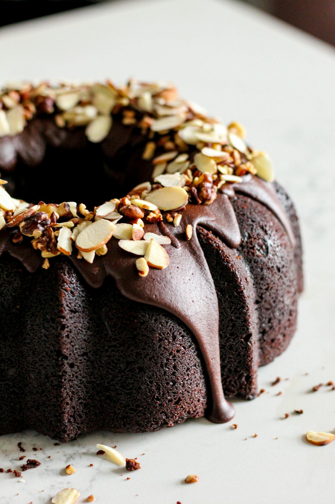
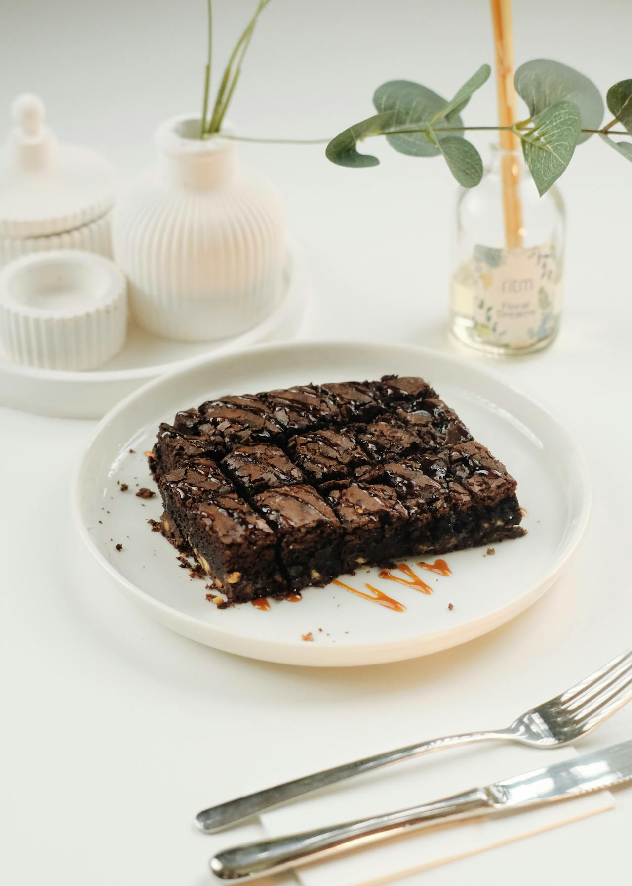
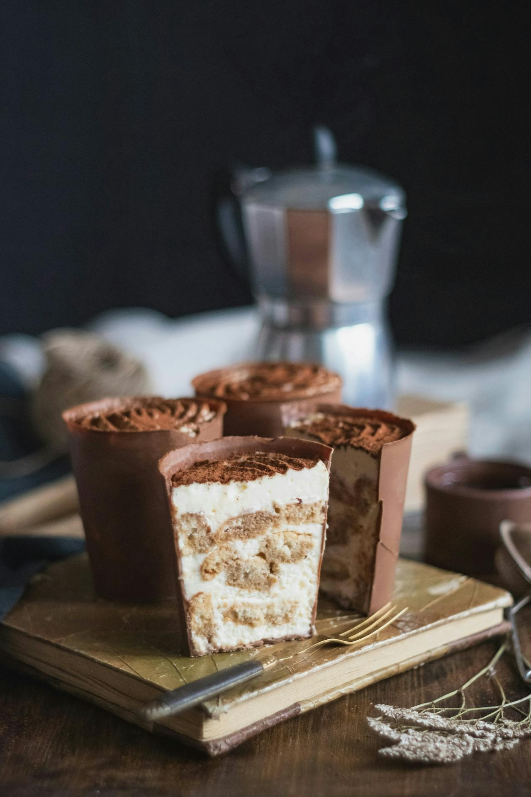
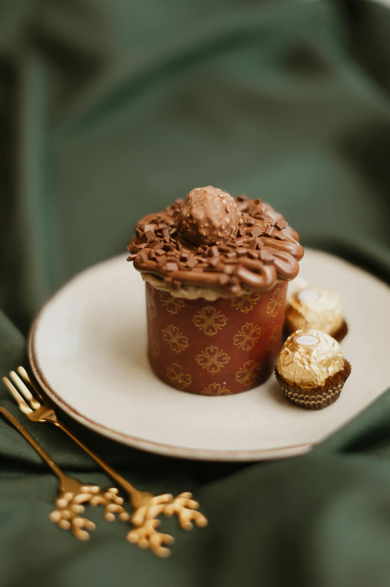
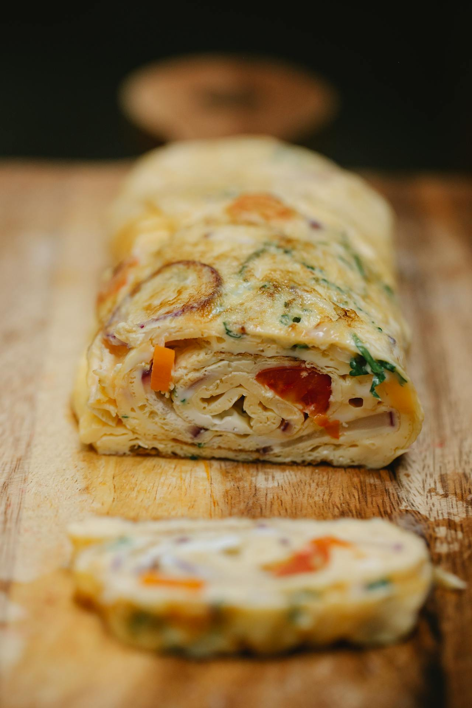
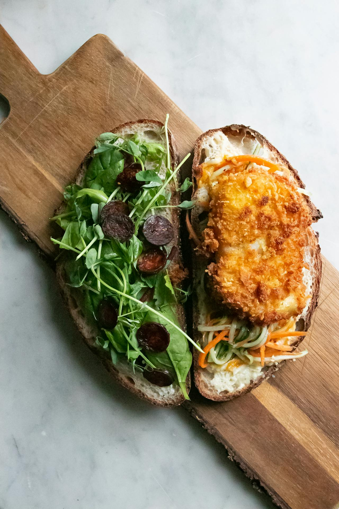

Bolo de chocolate Fit

Ingredientes da massa
- 4 ovos
- 130g de açúcar mascavo
- 160mL de óleo
- 192g de farinha de aveia
- 60g de cacau em pó 100% amargo
- 250mL de água quente (100graus celcius)
- 7.5g de fermento em pó químico
Modo de preparo da massa
Em uma batedeira acrescente os ovos, a água, o óleo e vá acrescentando aos poucos o açúcar e a farinha de aveia, até obter uma massa homogênia. Com uma colher misture o fermento vagarosamente até ele incorporar totalmente à massa. Unte uma forma, utilizando óleo e farinha. A forma deve ter 5cm de altura por 15cm de comprimento. E leve para assar em um forno pré aquecido à 1800C e deixe assar por 30 minutos.
Espere esfriar e desenforme o bolo em uma travessa adequada.
Ingredientes da cobertura
- 4g de manteiga (ou 5 mL de óleo de coco)
- 120g de cacau em pó 100% amargo
- 120g de açúcar mascavo
- 180mL de água em temperatura ambiente
Modo de preparo da cobertura
Em uma panela acrecente todos os ingredientes da cobertura e misture-os vagarozamente. Leve ao fogo baixo e continue mexendo até obter uma calda grossa, ainda quente cubra o bolo já desenformada, coloque o bolo na geladeira e depois de gelado é só servir.
Bolo de morango Fit
Ingredientes da massa
- 4 ovos
- 130g de açúcar mascavo
- 160mL de óleo
- 192g de farinha de aveia
- 250mL de água quente (1000C)
- 7.5g de fermento em pó químico
Modo de preparo da massa
Em uma batedeira acrescente os ovos, a água, o óleo e vá acrescentando aos poucos o açúcar e a farinha de aveia, até obter uma massa homogênia. Com uma colher misture o fermento vagarosamente até ele incorporar totalmente à massa. Unte uma forma, utilizando óleo e farinha, com as dimenções de 5cm de altura por 30cm de diâmetro. E leve para assar em um forno pré aquecido à 1800C e deixe assar por 30 minutos.
Espere esfriar e desenforme o bolo em uma travessa redonda com raio maior que a forma.
Ingredientes do recheio
- 4 gêmas
- 8g de manteiga (ou 10 mL de óleo de coco)
- 120g de leite em pó desnatado
- 180mL creme de leite desnatado
- 10mL de essência de morango
Modo de preparo do recheio
Em uma panela acrecente todos os ingredientes do recheio e misture-os vagarozamente. Leve ao fogo baixo e continue mexendo até o creme desgrudar do fundo da panela, depois que esfriar coloque entre as fatias do bolo e intercale o creme com geléia de morango.
Ingredientes da cobertura
- 4g de manteiga (ou 5 mL de óleo de coco)
- 120g de leite em pó desnatado
- 120g de açúcar mascavo
- 180mL de água em temperatura ambiente
- 10mL de essência de cereja
Modo de preparo da cobertura
Em uma panela acrecente todos os ingredientes da cobertura e misture-os vagarozamente. Leve ao fogo baixo e continue mexendo até obter uma calda grossa, depois que esfriar coloque sobre o bolo e enfeitei com alguns morango fatiados ou inteiros, e sirva.
Brownie Fit

Ingredientes da massa
- 6 ovos
- 200g de açúcar demera
- 160mL de óleo de coco
- 200g de farinha de aveia
- 50g de chocolate em pó 100% amarago
- 50mL de leite desnatado
- 7g de fermento em pó químico
Modo de preparo da massa
Em uma batedeira acrescente os ovos, o leite, o óleo e vá acrescentando aos poucos o açúcar, o chocolate e a farinha de aveia, até obter uma massa homogênia. Com uma colher misture o fermento vagarosamente até ele incorporar totalmente à massa. Unte uma forma, utilizando óleo e farinha, com as dimenções de 5cm de altura por 30cm de diâmetro. E leve para assar em um forno pré aquecido à 2000C e deixe assar por 20 minutos.
Espere esfriar e desenforme o bolo em uma travessa redonda com raio maior que a forma.
Ingredientes da cobertura
- 4g de manteiga (ou 5 mL de óleo de coco)
- 120g de leite em pó desnatado
- 180g de chocolate 100% amargo
Modo de preparo da cobertura
Em uma panela acrecente todos os ingredientes da cobertura e misture-os vagarozamente. Leve ao fogo baixo e continue mexendo até obter uma calda grossa, faça linhas cruzadas, espere gelar e sirva.
Copinhos de chocolate com recheio de creme branco e castanhas Fit

Ingredientes da massa
- 40g de chocolate em barra 75% aramgo
- 200g g de castanhas de caju
Modo de preparo das casquinhas de chocolate
Em uma panela derreta a barra de chocolate em banho-maria.
Em seguida coloque o chocolate derretido em forminhar de cilicones, no formato que você desejar e leve-as à geladeira até endurecer, e depois desenforme-as.
Ingredientes do recheio
- 4g de manteiga (ou 5 mL de óleo de coco)
- 120g de leite em pó desnatado
Modo de preparo do recheio
Em uma panela acrecente todos os ingredientes do recheio e misture-os vagarozamente. Leve ao fogo baixo e continue mexendo até obter um creme consistente, espere esfriar e coloque um pouco do creme e intercale-o com as castanhas de caju até cobrir totalmente o copinho de chocolate, em siguida espalhe um pouco de cacau em pó 100% amargo sobre a ultima camada de creme do copinho, leve à geladeira, espere gelar e sirva.
Cupcake Fit

Ingredientes da massa
- 4 ovos
- 180g de açúcar demera
- 60mL de óleo de coco
- 200g de farinha de aveia
- 50mL de leite desnatado
- 7g de fermento em pó químico
Modo de preparo da massa
Em uma batedeira acrescente os ovos, o leite, o óleo e vá acrescentando aos poucos o açúcar e a farinha de aveia, até obter uma massa homogênia. Com uma colher misture o fermento vagarosamente até ele incorporar totalmente à massa. Distribua a massa em 12 forminhas de cupcake e leve ao forno para assar por 20 minutos, em um forno pré aquecido à 1800C.
Ingredientes da cobertura
- 100 de creme de avelã
- 12 unidades de chocolate da ferrero rocher
Modo de preparo da cobertura
Após esfriar os cupcakes assados coloque uma camada de creme de avelã e para enfeitar coloque no meio do cupcake um bombom da ferrer rocher, e sirva.
Omelete Fit

Ingredientes da massa
- 12ovos
- 20g de salcinha fatiada
- 20g de cebolinha fatiada
- Um tomate picado, sem pele e sem semente
- 10g de cenoura ralada
- sal a gosto
- 15mL de óleo ou azeite
Modo de preparo da massa
Em uma tigela coloque os ovos, a salsinha, a cebolinha, o tomate e a cenoura ralada com sal, misture bem. Em uma frigideira coloque o óleo e espere esquentar, coloque a sua mistura e bem devagarinho levante as bordas para ver se embaixo está frito, assim que estiver frito levante vagarosamente e dobre a folhe de omelete, assim que dourar os dois lados do seu rolinho de omelete coloque-o em uma travessa e corte em pequenas fatias e sirva.
Sanduiche Fit

Ingredientes do sanduíche
- 1 pão itlaiano
- 100g de folhas de rúcula lavadas e secas
- 4 azeitonas pretas fatiadas em rodelas
- 1 fatia de peito de frango empanado com farinha de milho e azeite e grelhado
- 50g de cenoura ralada
- 50g de nabo ralado
- 50g de abobrinha ralada
Modo de preparo do sanduíche
Corte o pão italiano ao meio e coloque a cenoura, o nabo e a abobrinha ralada em uma das fatias do pão, em seguida coloque o peito de frango grelhado, as azeitonas pretas e as folhas de rúcula feche o sanduíche e sirva.